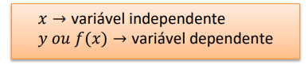
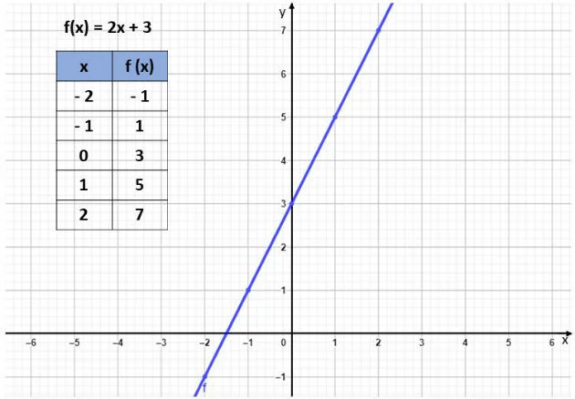

As funções são muito utilizadas no nosso dia a dia. Seu conceito é ter uma relação de dependência entre grandezas. Sempre vai existir duas váriaveis, uma será dependente e a outra idependente. Um exemplo de função é uma pessoa que trabalha com vendas, para ter o seu sálario final do mês ela depende das vendas realizadas durante todo o mês para poder receber, se ela não vender ela não recebe. O sálario depende das vendas.
É uma máquina que transforma números, calcula sempre o seu dobro. Sendo assim, ela gera dois conjuntos diferentes, o de entrada e o de saída que sempre será o dobro do conjunto de entrada
Para que a relação entre dois conjuntos seja considerada uma função, precisa respeitar duas regras:

Os tipos de funções vão variar dependendo das operações que estão envolvidas no contexto da função.
Alguns exemplos são:
A função afim é aquela em que obtemos dois resultados diferentes, ela é resolvida por uma equação do primeiro
grau,
e representada por gráficos.
Exemplo: f(x) = ax + b
Exemplo de representação gráfica de função afim
Este conteúdo teve breve explicações pelo fato de ter sido o conteúdo que mais senti dificuldades. Os outros conteúdos que eu consegui entender com mais facilidade diferente deste, consegui explicar melhor. Não foi por falta de ajuda ou explicação da professora, porque ela me explicou quando pedi. Só não consegui pegar muito o raciocínio, e as vezes as conversas paralelas na aula atrapalham.